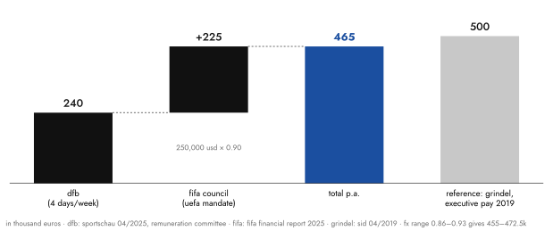
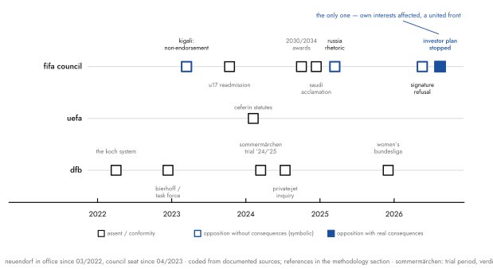
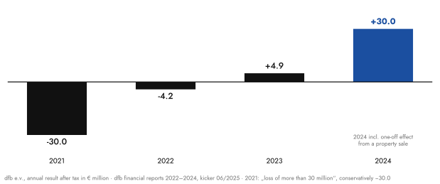
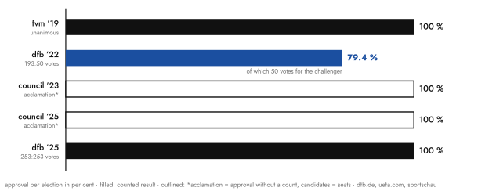

Bernd Neuendorf is the best-paid volunteer in German sport: around half a million euros a year, half of it from Zurich. What he delivers for it can be measured in thirteen episodes across three levels. What emerged is a pattern, not a scandal. Which of the two ends up costlier is for you to decide.
1the arithmetic
The most boring number is also the most robust: the German Football Association pays its president around €240,000 a year.1 Under the statutes, the office is an honorary post; the pay is set by an independent committee, based on a time commitment measured in weekdays. On taking office in 2022, the committee applied the maximum: five days. In April 2023, three weeks after Neuendorf's election to the FIFA Council, it corrected the figure to four — because the Zurich mandate "entails a reduced working time of the president for the DFB".2 One can dismiss this footnote of federation bureaucracy as trivia. I consider it the most honest number in the entire system: the DFB itself documents that, since 2023, one fifth of its president no longer belongs to it. For comparison, look at the vice-president: before the same committee, Hans-Joachim Watzke claimed one and a half days, the minimum — the man was running a Champions League finalist at the same time and evidently knew rather more precisely what a side office is.
The missing fifth is remunerated elsewhere, and better. For the seat on the FIFA Council, Zurich transfers $250,000 a year; the FIFA financial report 2025 lists the payment once again, "in addition to his DFB income".3 Depending on the exchange rate, that comes to €455,000 to €472,500 a year — the half million of the title, conservatively counted. Conservatively, because fringe benefits are not public. When the Süddeutsche asked in 2024 how often the president flies by private jet and who pays for it, the federation confirmed "a few exceptional cases" and refused everything further.4 So it remains: at least.

Is that a lot? The question is badly posed, and the proof is called Reinhard Grindel. When he fell over a gifted watch in 2019, the SID did the maths: Grindel's seats "for eight regular meetings a year" in the executive bodies of UEFA and FIFA carried €500,000.5 The half million, then, is no Neuendorf anomaly. It is the system price of the position, regardless of who sits on it. Which is where the real question only begins: what is being paid for here is evidently not a performance but a place. So what does the place deliver?
2the delivery
The nice thing about committees is: they keep minutes. Neuendorf has sat on the FIFA Council since April 2023 — elected not by the DFB but by the UEFA Congress, as a representative of Europe. The $250,000 formally remunerate a European mandate. One can therefore count what Europe gets for it: eight documented instances at FIFA and UEFA level in which a position is on record, coded by two simple questions. Did he oppose? And what would opposition have cost?

The chronology begins with the only moment for which Neuendorf became internationally known. Kigali, March 2023: the DFB refuses Gianni Infantino its endorsement for re-election, after weeks of pressure from fan alliances and human rights organisations.6 Sounds like resistance? It cost nothing, at least: Infantino stood without a challenger and was confirmed by acclamation. Three weeks later, Neuendorf had himself lifted into the Council. By acclamation, naturally.
Then it gets interesting. Autumn 2023, the Council readmits Russian U17 teams — whereupon twelve European federations, England among them, openly refuse to play Russia. Neuendorf carried the decision in the Council.7 I admit that before coding I had expected a simpler pattern: assent where Zurich pays, resistance where the cameras stand, and resistance above all when other federations provide cover. The data corrected me. Because here the cover existed: a twelve-country front, public, led by the English FA. All he had to do was fall in line. He stayed in, and with, the body.
December 2024 brought the pure form. The 2034 World Cup went to Saudi Arabia by virtual congress, bundled with the 2030 award, en bloc, vote by applause. The DFB applauded along; only Norway's federation chief Klaveness refused.8 Neuendorf's justification is remarkable precisely because it is so honest: "Why should we perform an opposition that would be utterly doomed to fail?" That is exactly the kind of symbolic politics he had practised in Kigali — except that there it was fit for applause, and here it would have cost something. Eight days before the award, incidentally, FIFA had announced a billion-dollar deal with DAZN, into which the Saudi sovereign wealth fund had shortly before bought with that very billion.3 A temporal sequence, not proof of causation. But one is allowed to write it down.
Between these poles lies the actual technique, so it gets a paragraph of its own: the decoupling of rhetoric and vote. The 2030 and 2034 awards passed the Council unanimously in October 2024 — accompanied by Neuendorf interviews about "questions of sustainability" and human rights that one was asking oneself. In March 2025 he publicly opposed a general return of Russian teams... all the better that the position was not up for a vote at all. The fan alliance "Unsere Kurve" has taken over the bookkeeping and drily recorded that the DFB has so far "carried every decision" in the Council. Criticism happens in front of microphones, assent in meetings; both are true and documented. Together they form the pattern. The latest headline belongs in this column too: in July 2026 the DFB refused to sign the letter of support for Infantino's re-election — a media thunderclap, in practice the Kigali figure reissued. The kicker noted in the same piece that a vote against Infantino was "not to be expected" and that relations had in any case been "normalised" since the joint appearance at the DFB's 125th-anniversary gala.9
And then, July 2026, the only counter-example: Infantino wanted to rush an investor plan through Congress, "FIFA Forward Enterprise", private capital participating in future FIFA revenues. Neuendorf publicly called it a "fatal signal" and threatened to stay away from Congress.9 Hard, effective opposition; Infantino withdrew the plan. Only: look at the conditions. The move hit the material interests of every federation, the Council had been bypassed, the UEFA front stood. And Neuendorf? His intervention came one day before the joint UEFA resolution, and his own verdict afterwards praised the "united appearance of all UEFA federations". Opposition happens when one's own coffers are affected and the costs are shared. That is not a character flaw, that is price theory.
3the domestic test
A pattern that appears on only one level is an anecdote. So the test at home, five cases. After the 2022 World Cup debacle, parting with Oliver Bierhoff was deemed necessary, and it came "by mutual consent". The succession question was moved into a specially formed task force, from whose midst Rudi Völler was then anointed. The conflict was not decided, it was collectivised.10 In the Sommermärchen trial — the biggest court case in the federation's history — not a single sitting official appeared on any of 34 trial days; the presiding judge called the cooperation with the DFB "catastrophic", reprimanded an "attempted exertion of influence" via a federation letter to the prosecutor general's office, and asked publicly whether the federation "actually takes the justice system seriously".11 The verdict itself cut against the DFB twice over: the chamber found, at its core, tax evasion by the federation of around €2.7 million and imposed a €110,000 fine — while the DFB, in parallel, is suing its former president Zwanziger for €24 million in damages. Reckoning with the past, delegated to the criminal and civil courts; the incumbents stayed out of the room. The private-jet inquiry we have already had: confirmation of the minimum, refusal of the details — information control, structurally identical to the Kigali justification ("no or insufficient information"), only this time in the role of the party obliged to disclose.
The most instructive case is the only openly fought power struggle of the tenure, and it was lost. When the fourteen first-division women's clubs founded their own league association in December 2025 (without DFB participation), the federation officially reacted "with astonishment". The joint venture failed; in May 2026 the framework agreement stood: the women's Bundesliga passes to the league association from July 2027, with the DFB contributing more than €20 million over seven years. Neuendorf called the outcome a "viable compromise".12 Retreat plus cheque, rhetorically coded as agreement: the vocabulary is federation prose, the balance sheet is unambiguous.
That leaves Rainer Koch, the string-puller of the old DFB, who had helped set Neuendorf's candidacy on its way. Before the 2022 election, Neuendorf declined to commit — he could not "simply take the side of Koch's opponents". The problem then solved itself: Koch lost the presidium election through a tactical blunder of his own, offered his withdrawal, returned to the bench.13 The "Koch system" ended — without the new president lifting, or risking, a finger for it. Five cases out of five, the same pattern. In thirteen coded episodes across three levels there is not a single documented conflict that Neuendorf fought openly and won.
4the origin of the pattern
Where does such an operating system come from? Not from the pitch. Neuendorf's playing career ended as a youth left winger for FC Grenzwacht Hürtgen with a knee injury — it remains the only documented position in which he ever had opponents. After that: history, politics, sociology in Bonn and Oxford, a Reuters traineeship, parliamentary correspondent, deputy editor-in-chief. And then, in 2003, the switch of sides that explains everything that followed: spokesman of the SPD's national executive under Gerhard Schröder, in the middle of the Agenda years. He himself, later, about it: "I was indeed convinced of Gerd Schröder's course. Back then we were the crew that said: we think this is right."14
The crew lasted a year. When Schröder handed the party chairmanship to Müntefering, the spokesman was swapped out — the first fall of a patron. Neuendorf went to North Rhine-Westphalia, became spokesman, then general manager of the NRW SPD, the "organisational and intellectual backbone" of the state party, finally a tenured state secretary in the family ministry, responsible among other things for sport. Until Hannelore Kraft was voted out in 2017 — the second fall of a patron, and this time with no follow-on posting: sixteen months that I shall simply file in his CV as a "sabbatical". Then, at the end of 2018, the nomination for president of the Middle Rhine Football Association. Unanimous, without a challenger, without the candidate ever having held a federation office.
No kitchen psychology is needed here; the paper trail suffices. Anyone who has twice experienced that his own position lasts exactly as long as the patron is in office has learned a rational lesson: it is not proximity to power that secures the post, but proximity to the majority. When the amateur federations went looking for a president in 2021 who — after three predecessors had failed early — was above all supposed to do one thing, namely not to give offence, they found an applicant whose entire career had been training in agreeability. The Süddeutsche called him a "new face for the old system", Übermedien "the Olaf Scholz of football".15 Both were meant as criticism. Read as a job profile, it was a bullseye: 193 to 50 votes against the leagues' candidate.
The SPD, by the way, appears in this story not as a thesis but as a milieu. Twenty years of party and ministerial apparatus are a school, and what it teaches is the same everywhere: adopted positions bind, majorities are organised before the meeting, and whoever is outvoted in the body carries the decision. Neuendorf did not invent this grammar, he merely internalised it more consistently than most — and carried it into a federation whose delegate system structurally resembles it anyway. That his most important promoter on the way into office, the Bavarian Rainer Koch, is according to publicly available records likewise an SPD member, shall be noted merely in the margin. No conspiracy is needed where a shared socialisation suffices.
5the counter-arithmetic
Now the other side, and it is better than the text so far would suggest. In 2022 Neuendorf took over a federation with a structural deficit of around €20 million and vice-presidents who greeted each other through lawyers. In 2024 the DFB e.V. closed with a surplus of around €30 million; the free reserve grew again for the first time since 2014, to €54.7 million.16 The consolidation — some €15 million, in a federation where every cut must pass through a committee — Neuendorf once summed up in a sentence more honest than any results press conference: "That was a grind."

The objection I got stuck on longest while writing stands in this chart. If conflict avoidance is a character trait that ruins federations — why is this federation in better shape than at takeover? The honest answer: both can be true at once. Membership passed eight million for the first time in 2025; the home Euro ran organisationally without a flaw; the Women's Euro 2029 was brought to Germany in December against two rival bids. At the same time, the limits of attribution are documented: the membership record owes something to a counting reform in children's football, while the number of clubs fell below 24,000 for the first time; the record surplus owes itself to a one-off effect; and the core sporting task stands at three early World Cup exits in a row, most recently in the round of 32 against Paraguay, followed by the termination of the national coach's contract.17 A president elected for not giving offence has delivered what he was elected for: calm and orderly books. Except that this was not all that was in the job advertisement. After the first term, the Sportschau drew a "mixed" balance and, in the World Cup summer, supplied the headline that describes the behaviour more precisely than any coding table: "The boss is present, but not in the thick of it."17
And then there is the passage where the counter-arithmetic tips back into the arithmetic. The home Euro ran through a joint venture in which UEFA held 95 per cent and the DFB 5. Federal, state and city governments contributed around €650 million according to ZDF and Spiegel research; UEFA paid no taxes on its marketing revenues and ended up booking around €2.5 billion in income and €1.276 billion in tournament profit. Germany's prize money: €15.75 million.18 The hosting federation president's comment on this, verbatim: "That UEFA makes money from it is also fine." Note the word "also". It works harder than the rest of the sentence.
6acclamation as operating system
No. 01 of this series contains a survey of world football on the mafia scale after Gambetta and Paoli.19 UEFA came out at 46 of 100 points there, the only body below the 50 line — expressly because it is the only body in which documented dissent has ever had an effect: Boban, Gill, Klaveness. This is exactly where the personnel question becomes a system question. Neuendorf operates in the one confederation whose comparatively good grade rests on the possibility of effective dissent — and the coding above shows that he has not used this possibility in a single documented case. He inhabits the space without using it.
How little, the Ceferin case shows. In early 2024 the UEFA president had his statutes amended so that his first term no longer counts — the Zurich manoeuvre, copied to Nyon, against the term limit that had been introduced in 2017 partly at the DFB's own urging. The DFB publicly pledged its assent in advance, "also on the basis of the good cooperation". At the congress, a single federation voted against: England.20 Ceferin subsequently declined to run, with the remarkable sentence that he had wanted to "see the true face of some people". A year later, in Belgrade, the DFB leadership openly campaigned for his fourth term; Neuendorf's contribution: "The federations always work well when there is stability at the top." The federation thus voted against its own reform of 2017, for a manoeuvre from the Infantino playbook — out of loyalty to the body, towards the man with whom the DFB had once passed that reform. Conformity here demonstrably beats one's own history.

One more appointment belongs to the architecture, completing the picture. While the president grounds his office on an amateur mandate, his first vice-president unites three functions: Watzke chairs the supervisory board of the DFL, has sat since 2025 as second vice-president on the UEFA Executive Committee, and sits on the DFB presidium.20 The professional side is thus represented in the federation's leadership and in the European body by one and the same person — with a power base and an agenda of his own, see Belgrade. A president who avoided conflicts, and a deputy who does not need them because he occupies the structures himself: that, too, explains why this tenure stayed so quiet. There was simply little left to fight over at the top — and where there was, in the women's game, the federation lost to the clubs.
No. 01 lists "honours by acclamation" as an omertà indicator of the system. One need only hang the finding one level lower: of Neuendorf's five elections since 2019, exactly one knew a challenger — the first one at the DFB. Everything after ran unanimously or by applause, most recently with 253 of 253 votes. And the Council remuneration, the half of the half million, is the same mechanism that no. 01 measures as patronage: disbursements that do not need to buy loyalty because they structure it. Nobody bribed Neuendorf. The system simply pays the position — and the position behaves the way positions behave that are awarded by acclamation.
7for what?
That leaves the title question, and it goes to two addressees. The DFB pays €240,000 for four days of federation leadership a week and receives in return (soberly totted up) restored finances, a pacified apparatus, a successful home Euro, a Women's Euro won for Germany — plus a lost power struggle over the women's Bundesliga, a federation conspicuous in court by its absence, and the third botched men's World Cup in a row. One may call that a decent record; the Sportschau called it "mixed". Europe pays, via Zurich, $250,000 for representation in the most powerful body of world football. It receives in return a representative whose documented committee record shows zero dissenting votes, whose dissent reliably appears when it costs nothing — and exactly once, when his own coffers were affected.
On the final read-through I noticed that the number itself no longer really occupies me. Half a million is, in world football, petty cash at best; FIFA earns it in a quarter of an hour of Club World Cup. What stayed with me is something else: in four years and thirteen episodes there is not a single moment in which this price contained any risk whatsoever.
Perhaps that is the real answer to what is being paid for: payment follows neither performance nor loyalty, it follows predictability. A man who has twice experienced what happens to positions that hang on persons delivers to the system the only commodity it truly demands: the guarantee that no surprise will come from him. Grindel got the same money for the same position; the price does not know its bearers. Half a million — for what? For four days of federation, a few sessions of Council, and the reliable absence of dissent. Whether that is expensive depends on what dissent would be worth to you. The system gave its answer long ago... by acclamation, naturally.
methodology and sources
The pay arithmetic adds the DFB remuneration communicated by the remuneration committee (around €240,000, Sportschau 04/2025) and the Council remuneration listed in the FIFA financial report 2025 ($250,000), converted at an exchange-rate range of 0.86–0.93 EUR/USD; this yields €455,000–472,500 p.a. The wording "at least" reflects that fringe benefits are not disclosed. A reported prior figure (€265,000 before 2022) was left aside as a single-source claim. — The coding covers all publicly documented instances in the period 2022–2026 in which a position taken by Neuendorf or the DFB is on record; "opposition" means publicly documented non-assent, "consequences of opposition" distinguishes inconsequential constellations (the outcome was fixed) from real ones (a vote or a united front could have had effect). The coding is binary and therefore coarser than reality; the borderline cases E1 and E7 are flagged as symbolic in the text. Findings of the Frankfurt regional court concern events before Neuendorf's tenure; for all persons named, where proceedings are mentioned, the presumption of innocence applies. The strongest objection to the interpretation stands in chapter 5. Raw data, source URLs and the full coding table are held by the author as a workbook; the strongest objection received will be published — even if it lands.